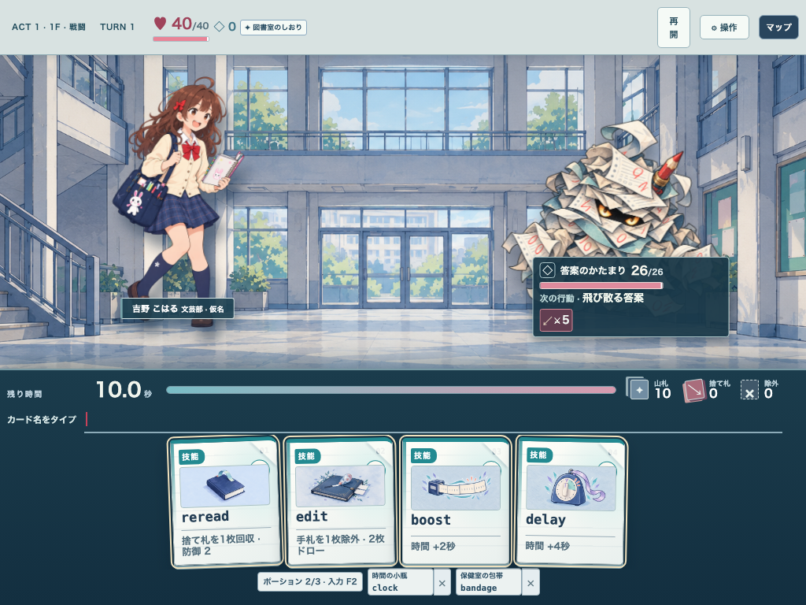
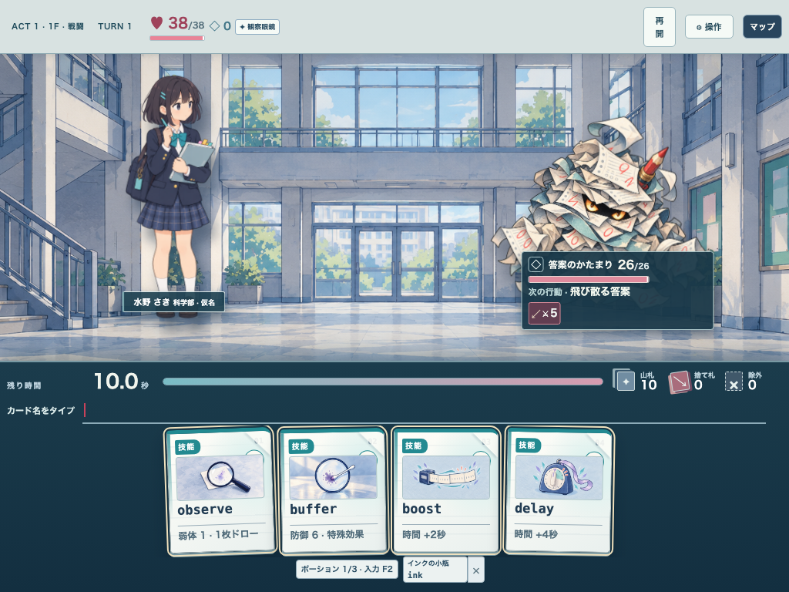
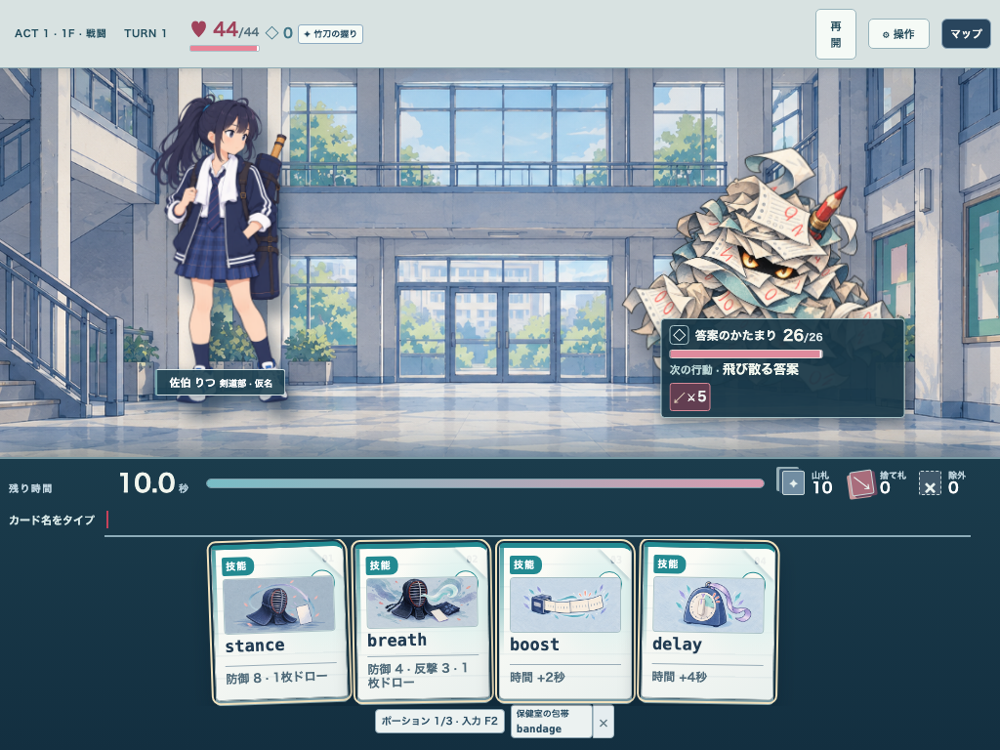
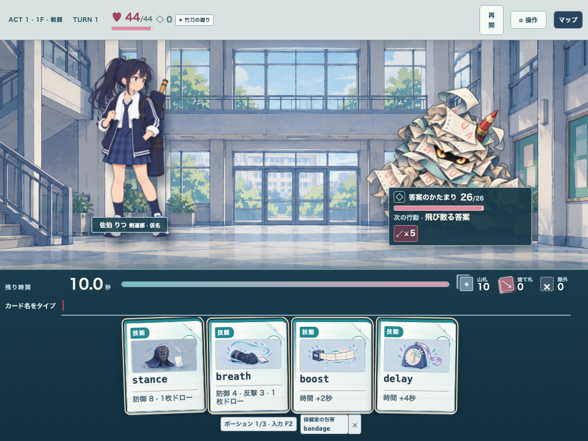
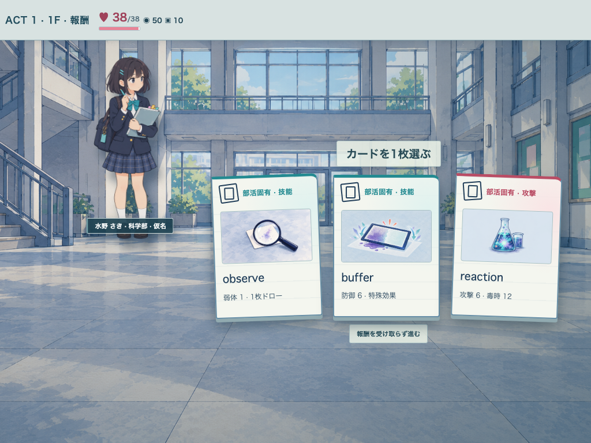
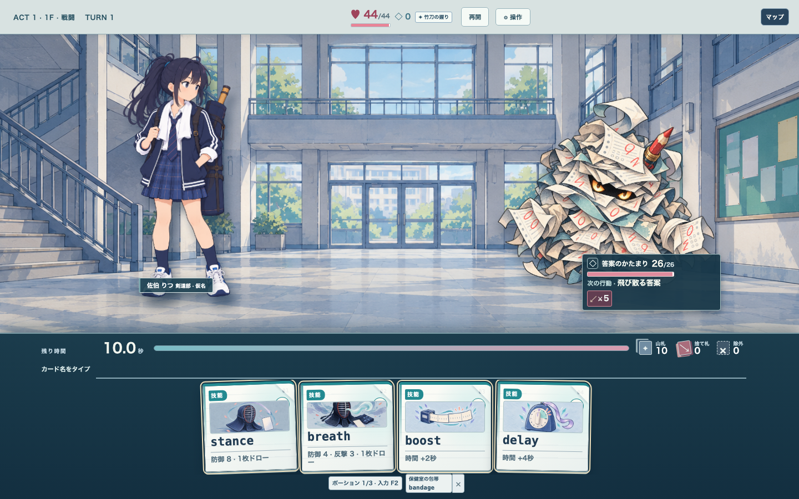

同一手札・報酬・背景・画面寸法。全画像は未採用候補。






音楽・美術では共通カードBOOST/DELAYが改稿後のカタログで変わらず表示されることを確認。各部活の旧/新手札・報酬は {literature,science,kendo,music,art}-{1024,1440}-{hand,reward-1}-{before,after}.png。
{literature,science,kendo,music,art}-{1024,1440}-{hand,reward-1}-{before,after}.png